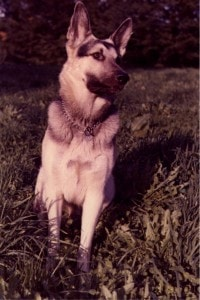

Puzzle 18: Schäferhund und Herde

Der Schäferhund Boy befindet sich am Ende einer 1 km langen Schafherde, die sich mit konstanter Geschwindigkeit
vorwärtsbewegt.
Zur Kontrolle läuft er nun - mit einer grösseren konstanten Geschwindigkeit als die Herde - vom Ende
bis zur Spitze der Herde und wieder an seinen Platz am Ende der Herde zurück. Als er wieder hinten ankommt, ist die
Schafherde genau einen Kilometer weiter gewandert.
Wie weit ist Boy gelaufen?
©1997 - 2026 www.mathematik.ch |🔍